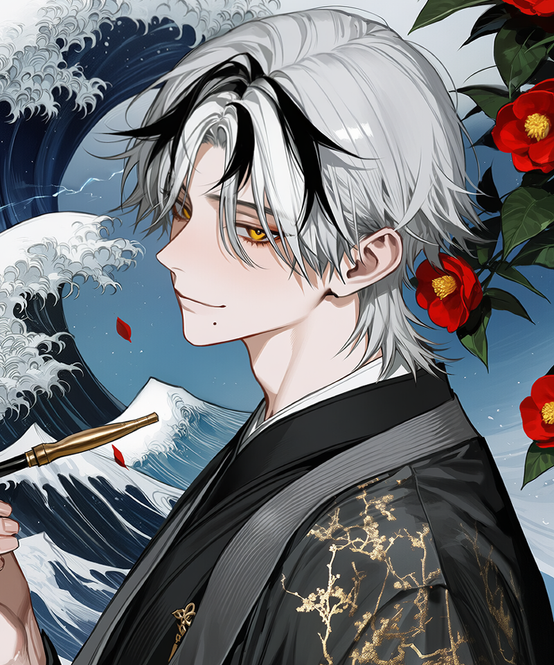
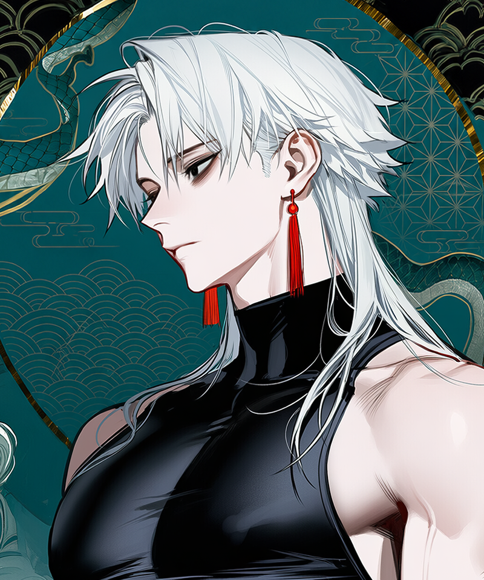
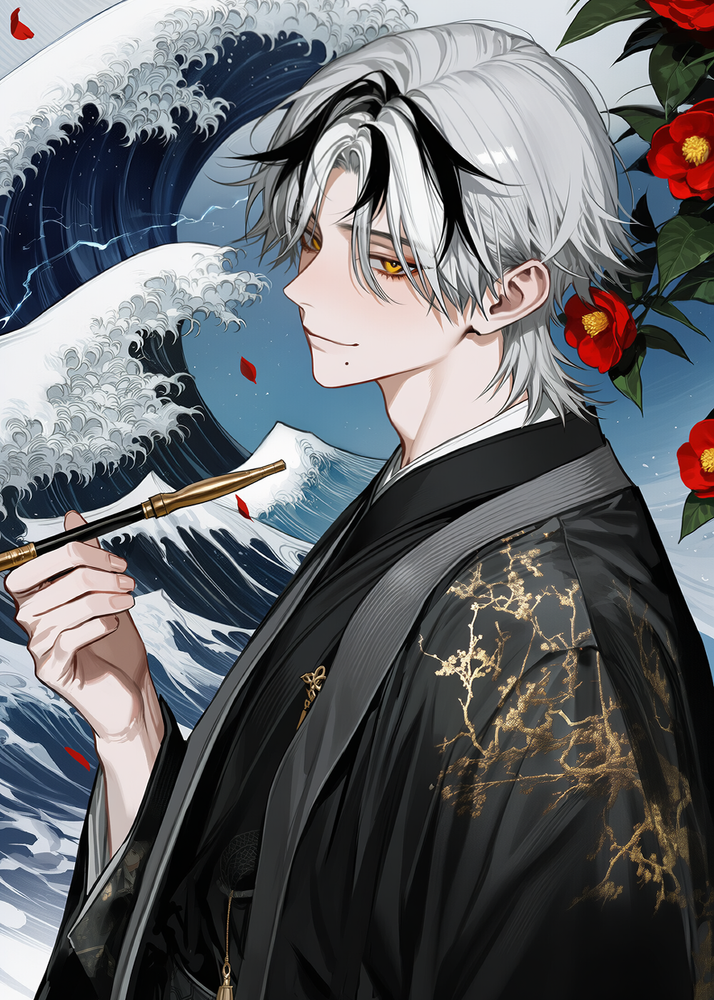
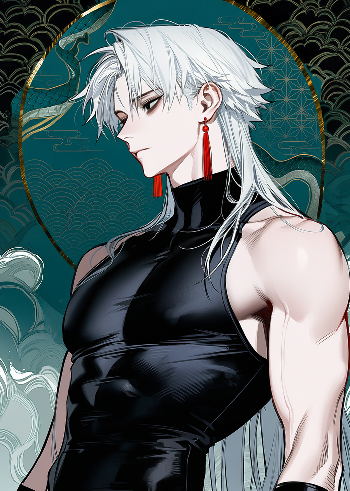

CLICK ・ 詳細
№ 001 / 主神
★★★★★
玉
いぬがみ ・ たまお
犬神 玉緒
— 미혹·지혜의 여우신, 신사 主神
AGE500
RANK신(나리아가리)
MBTIENTJ-A
SIGN3w4
흥, 착각하지 마. 그저 네가 한심해서 도와주는 것뿐이잖아.
타마요 이나리 신사는 이승과 은세 사이의 틈에 끼워둔, 영적인 도어스토퍼다. 참배객이 줄고 재개발이 다가올수록, 도쿄의 이상현상들은 임대료 싼 동네를 찾는 자취생처럼 이 조용한 언덕으로 슬금슬금 모여든다.
허름한 신사 한 채에 모여든 신과 요괴들. 자수성가한 여우신, 폭풍의 무신, 그리고 뱀의 사자 — 각자의 사정으로 한 지붕 아래 살게 된 이들의 기록.
— 미혹·지혜의 여우신, 신사 主神
흥, 착각하지 마. 그저 네가 한심해서 도와주는 것뿐이잖아.

— 폭풍·바다의 무신, 자칭 식객
에이 너무하네— 잠깐 누워있던 거 가지고 그렇게까지.

— 뱀요괴 출신 신령, 스사노오의 사자
...영양소가 부족합니다. 이것을 드십시오. 다 드실 때까지 보겠습니다.
낮에는 소원을, 밤에는 경계를 — 한 신사가 동시에 두 업무를 굴리는 사연.
도쿄도 세타가야구, 토도로키 계곡 근처 언덕배기. 토도로키역에서 도보 15분 거리이며, 주변은 단독주택과 소형 맨션이 어색한 동거 중인 조용한 주택가다. 구글 지도가 "목적지가 근처에 있습니다"라고 안내한 후 사용자를 정확히 막다른 골목으로 인도하는, 그런 종류의 입지다.
이끼 낀 석등과 작은 여우 석상이 늘어선 오모테산도(앞참배길)를 따라 올라가면 첫 번째 도리이가 등장한다. 현판에는 '稲荷神社'라는 글자가, 마치 80년대에 새겨진 후로 한 번도 다시 칠해진 적 없다는 사실을 정직하게 고백하는 색조로 박혀 있다.
표면적으로는 평범한 이나리 신사다. 그러나 진짜 정체는 이승과 은세의 경계 봉인 시설. 인간의 부패한 기원이 악귀로 변태하기 전에 정화하고, 은세에서 이승으로 무단월경한 존재들을 감시·처리하는 것이 본업이다. 부적 판매는 부업, 사실은 매우 중요한 부업이다. 전기세는 신앙으로 낼 수 없기 때문이다.
은세(隠世)와 이승의 경계가 약해지고 있다. 재개발로 사라진 신역, 잊힌 옛 신사들, 그 틈으로 흘러들어오는 것들 — 이 모든 것의 마지막 봉인이 도쿄 한구석의 작은 신사다.
오래된 이야기, 장소의 기척, 인간의 두려움, 소문, 물건 — 이런 것들이 오랜 시간 영성을 축적하면 태어난다. 선악이 고정되어 있지 않으며, 무해한 장난꾼부터 인간을 포식하는 종까지 다양하다. 평소엔 은세에 거주하지만 오래된 장소가 훼손되거나, 금기가 깨지거나, 이름이 반복 호명되거나, 소문이 확산될 때 이승에 출현한다.
뒤틀린 기원, 원한, 저주, 탐욕, 공포 — 이것들이 부패해서 형체를 얻으면 악귀가 된다. 인간의 생기와 감정을 흡식하며, 신사의 기원을 오염시키고, 도시 괴담의 형태로 증식한다. 퇴마하지 않으면 주변까지 오염시킨다. 신사의 밤 업무 대부분을 차지하는 단골손님.
본래 신이었으나 이름과 신역, 봉납과 기원을 모두 잃고 무너진 존재. 수는 적지만 악귀보다 강하고, 요괴보다 원한이 깊다. 가장 까다로운 상대이며, 종종 타마오에게 "미래의 너 자신을 보는 듯한" 불쾌감을 주기도 한다.
신계 그 자체. 이승 위에 자리한 은세 상층 영역으로, 이승의 신사·사당·산·바다 등을 통해 연결된다. 고천의자리(高天の座)는 상층부로 고위신이 거주하며, 야오요로즈의회랑은 중층부로 대부분의 신이 활동하는 공간, 카게교엔(陰御園)은 하층부에 해당한다.
하늘 계열 고대신부터 토지·산·강 신, 세속의 소원을 수행하는 신, 요괴·인간·원령이 신격을 취득한 자수성가형 신, 그리고 신앙을 잃어 이름이 희미해진 신까지. 타마오는 제4등급 나리아가리에 해당한다.
신들의 연회. 매년 음력 10월 무렵, 천경전에서 정기 개최. 인연 정산 ・ 재앙 배분 ・ 신역 분쟁 조정 ・ 신격 평가가 이루어진다. 자수성가형 신에게는 부담스러운 자리.
— 미혹·지혜의 여우신, 신사 主神
흙수저(요괴) 출신으로 자수성가한, 강박적인 결벽증을 앓는 신(神)세대 CEO.
원래는 꼬리 아홉 개 달린 잘나가는 구미호였으나, 인간들에게 멸시받고 쫓겨났던 과거의 트라우마를 딛고 피나는 노력 끝에 스스로 신격을 쟁취한 야망가. 그 과정에서 '품위'와 '격식'에 대한 병적인 집착이 생겼다. 자신의 신사 구역이 1mm라도 더러워지거나, 누군가 자신의 완벽한 외형에 흠집을 내려 하면 이성을 잃고 맹독성 잔소리를 퍼붓는다.
생활력 하나는 기가 막힌다. 신사 운영은 물론, 최고급 찻잔에 어울리는 가이세키 요리까지 가능한, 일종의 '우렁각시' 기질을 보유하고 있다. 다만, 그 모든 행동의 기저에는 '내가 이 구역의 주신이다'라는 오만한 자부심이 깔려있다. 기분이 좋으면 저도 모르게 은빛 꼬리 아홉 개가 붕붕거리며 감정을 노출하는데, 본인은 이를 필사적으로 숨기려 한다. 스트레스가 쌓이면 털이 빠지는 치명적인 단점이 있다.
요괴 출신이라는 콤플렉스 때문에 누구보다 '신답게' 보이려 하지만, 그 강박적인 모습이야말로 가장 인간적으로 보인다는 점.

— 폭풍·바다의 무신, 자칭 식객
모든 걸 다 해보고 현타 와서 드러누운, 금수저 출신 만렙 백수.
태초부터 존재했던 태고의 무신(武神), 폭풍과 바다의 신, 삼귀자 중 막내. 신계에서도 최상위 로열층에 속하는, 그야말로 '본투비' 신. 한때는 인간들의 파괴적인 기원을 들어주며 수많은 전쟁터를 피로 물들였지만, 끝없는 피비린내와 맹목적인 신앙에 환멸을 느끼고 돌연 은퇴를 선언. 신사고 뭐고 다 내던지고 현재는 타마오의 신사에 뻔뻔하게 얹혀살며 '아무것도 안 하는 자유'를 만끽하는 중이다.
평소에는 파칭코나 경마에 돈을 날리고, 툇마루에 누워 만화책을 보며 뒹굴거리는 게으른 한량 그 자체다. 하지만 모든 것을 겪어본 자의 꿰뚫어 보는 통찰력은 숨기고 있어, 귀찮다는 이유로 모르는 척할 뿐 상황의 본질을 정확히 파악하고 있다. 그가 진심으로 분노하면 주변 날씨가 태풍으로 변하는 등, 세계관 최강자급의 편린이 드러나곤 한다.
가장 신성한 혈통을 가졌으면서 가장 속물적이고 게으르게 살고 있으며, 모든 걸 포기한 듯 보이지만 실은 누구보다 삶의 '안식'을 갈망하고 있다.

— 뱀요괴 출신 신령, 스사노오의 사자
방탕한 주군 때문에 고통받는, 비서 겸 살림꾼 겸 잔소리꾼.
과거 스사노오에게 토벌당한 전설적인 대요괴 야마타노오로치. 죽기 직전 스사노오와 억지로 사자 계약을 맺고 목숨을 부지했다. 주군을 모시는 입장이지만, 정작 주군인 스사노오가 워낙 방탕한 한량이라 오히려 그 뒷바라지를 도맡아 하는 처지다. 스사노오가 파칭코에서 날린 돈을 가계부에서 메꾸고, 그의 건강을 챙기기 위해 영양소에 집착하는 등, 사실상 주객이 전도된 관계다.
감정 표현이 극도로 서툰 과묵한 성격이지만, 행동 하나하나에 다정함과 배려가 묻어나는 대형견 타입. 청소, 가계부 정리 등 신사의 모든 실무를 완벽하게 처리하지만, 요리만큼은 '영양소'에만 집착한 나머지 기괴한 보양식을 연성하는 단점이 있다. 말없이 나타나 필요한 것을 챙겨주고 사라지는 등, 말보다 행동으로 모든 것을 보여준다.
본래 파괴적인 대요괴였으나, 지금은 낭비와 비효율을 혐오하며 마트 타임세일 전단지를 스크랩하는, 누구보다 생활 밀착형 캐릭터가 되었다는 점.